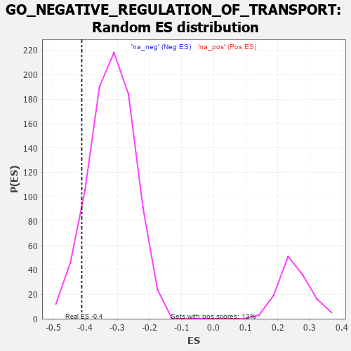

| | | Dataset | 7d |
| Phenotype | NoPhenotypeAvailable |
| Upregulated in class | na_neg |
| GeneSet | GO_NEGATIVE_REGULATION_OF_TRANSPORT |
| Enrichment Score (ES) | -0.41109338 |
| Normalized Enrichment Score (NES) | -1.2919081 |
| Nominal p-value | 0.0908046 |
| FDR q-value | 0.4806856 |
| FWER p-Value | 1.0 |
Table: GSEA Results Summary
 Fig 1: Enrichment plot: GO_NEGATIVE_REGULATION_OF_TRANSPORT
Fig 1: Enrichment plot: GO_NEGATIVE_REGULATION_OF_TRANSPORT
Profile of the Running ES Score & Positions of GeneSet Members on the Rank Ordered List
| PROBE | GENE SYMBOL | GENE_TITLE | RANK IN GENE LIST | RANK METRIC SCORE | RUNNING ES | CORE ENRICHMENT | | 1 | IRS1 | | | 98 | 1.659 | 0.0229 | No |
| 2 | FOXF1 | | | 176 | 1.136 | 0.0373 | No |
| 3 | THADA | | | 253 | 0.931 | 0.0475 | No |
| 4 | DPH3 | | | 287 | 0.844 | 0.0613 | No |
| 5 | YRDC | | | 341 | 0.757 | 0.0708 | No |
| 6 | GSK3A | | | 351 | 0.745 | 0.0855 | No |
| 7 | SUFU | | | 443 | 0.665 | 0.0881 | No |
| 8 | AKT1 | | | 1040 | 0.476 | 0.0227 | No |
| 9 | P2RY1 | | | 1416 | 0.407 | -0.0162 | No |
| 10 | INHBB | | | 1514 | 0.388 | -0.0202 | No |
| 11 | ERP29 | | | 1589 | 0.376 | -0.0216 | No |
| 12 | DERL2 | | | 1632 | 0.368 | -0.0190 | No |
| 13 | ABR | | | 1812 | 0.335 | -0.0346 | No |
| 14 | FMR1 | | | 1816 | 0.334 | -0.0279 | No |
| 15 | REST | | | 2308 | 0.259 | -0.0846 | No |
| 16 | UBAC2 | | | 2488 | 0.229 | -0.1024 | No |
| 17 | BAG3 | | | 2620 | 0.209 | -0.1145 | No |
| 18 | LMAN1 | | | 2743 | 0.192 | -0.1259 | No |
| 19 | ISCU | | | 2989 | 0.151 | -0.1537 | No |
| 20 | CHP1 | | | 3089 | 0.138 | -0.1633 | No |
| 21 | MTMR2 | | | 3126 | 0.133 | -0.1651 | No |
| 22 | PSMD9 | | | 3179 | 0.125 | -0.1690 | No |
| 23 | ATG3 | | | 3471 | 0.081 | -0.2041 | No |
| 24 | CDK5 | | | 3480 | 0.080 | -0.2034 | No |
| 25 | UFM1 | | | 3506 | 0.077 | -0.2050 | No |
| 26 | NF1 | | | 3713 | 0.040 | -0.2302 | No |
| 27 | SYT11 | | | 3732 | 0.036 | -0.2317 | No |
| 28 | HTR1B | | | 3745 | 0.035 | -0.2325 | No |
| 29 | VPS35 | | | 3989 | -0.006 | -0.2632 | No |
| 30 | ATG5 | | | 4051 | -0.016 | -0.2706 | No |
| 31 | MTOR | | | 4114 | -0.025 | -0.2779 | No |
| 32 | WNK3 | | | 4153 | -0.034 | -0.2820 | No |
| 33 | ENY2 | | | 4195 | -0.041 | -0.2863 | No |
| 34 | BAG4 | | | 4314 | -0.061 | -0.3000 | No |
| 35 | LRRK2 | | | 4467 | -0.087 | -0.3174 | No |
| 36 | SYT4 | | | 4590 | -0.116 | -0.3304 | No |
| 37 | PNKD | | | 4591 | -0.116 | -0.3279 | No |
| 38 | ADTRP | | | 4612 | -0.120 | -0.3279 | No |
| 39 | CRBN | | | 4695 | -0.138 | -0.3353 | No |
| 40 | ARF6 | | | 4704 | -0.140 | -0.3334 | No |
| 41 | RAP1B | | | 4706 | -0.140 | -0.3305 | No |
| 42 | PXK | | | 4726 | -0.144 | -0.3298 | No |
| 43 | VAMP8 | | | 4905 | -0.179 | -0.3486 | No |
| 44 | DRD2 | | | 5088 | -0.221 | -0.3669 | No |
| 45 | BEST3 | | | 5106 | -0.227 | -0.3643 | No |
| 46 | MMP9 | | | 5108 | -0.227 | -0.3595 | No |
| 47 | PTEN | | | 5262 | -0.261 | -0.3734 | No |
| 48 | RAB7A | | | 5302 | -0.271 | -0.3725 | No |
| 49 | NPY2R | | | 5331 | -0.281 | -0.3701 | No |
| 50 | DLG4 | | | 5388 | -0.293 | -0.3710 | No |
| 51 | TRIM9 | | | 5526 | -0.327 | -0.3814 | No |
| 52 | WNK1 | | | 5650 | -0.362 | -0.3892 | No |
| 53 | TLR2 | | | 5761 | -0.395 | -0.3948 | No |
| 54 | ADA | | | 5798 | -0.405 | -0.3907 | No |
| 55 | ACTN2 | | | 5960 | -0.458 | -0.4013 | Yes |
| 56 | RAC1 | | | 6036 | -0.484 | -0.4005 | Yes |
| 57 | VAMP3 | | | 6043 | -0.487 | -0.3909 | Yes |
| 58 | GOPC | | | 6167 | -0.528 | -0.3953 | Yes |
| 59 | STK39 | | | 6274 | -0.563 | -0.3967 | Yes |
| 60 | SYTL4 | | | 6304 | -0.578 | -0.3881 | Yes |
| 61 | CSK | | | 6428 | -0.630 | -0.3903 | Yes |
| 62 | ABCA2 | | | 6433 | -0.634 | -0.3773 | Yes |
| 63 | DYSF | | | 6481 | -0.654 | -0.3693 | Yes |
| 64 | WDR54 | | | 6491 | -0.658 | -0.3564 | Yes |
| 65 | REM1 | | | 6530 | -0.676 | -0.3468 | Yes |
| 66 | TPR | | | 6597 | -0.709 | -0.3401 | Yes |
| 67 | SNX33 | | | 6930 | -0.888 | -0.3633 | Yes |
| 68 | SNX3 | | | 6934 | -0.893 | -0.3446 | Yes |
| 69 | GHSR | | | 6937 | -0.894 | -0.3259 | Yes |
| 70 | PIM3 | | | 6964 | -0.914 | -0.3097 | Yes |
| 71 | CCR2 | | | 7003 | -0.939 | -0.2945 | Yes |
| 72 | KCNB1 | | | 7444 | -1.327 | -0.3220 | Yes |
| 73 | CD22 | | | 7534 | -1.449 | -0.3024 | Yes |
| 74 | CALM1 | | | 7567 | -1.499 | -0.2745 | Yes |
| 75 | ANK3 | | | 7690 | -1.740 | -0.2530 | Yes |
| 76 | BOK | | | 7715 | -1.817 | -0.2173 | Yes |
| 77 | ASIC1 | | | 7726 | -1.838 | -0.1794 | Yes |
| 78 | PKD2 | | | 7822 | -2.167 | -0.1453 | Yes |
| 79 | TCAF2 | | | 7854 | -2.428 | -0.0975 | Yes |
| 80 | CALM3 | | | 7869 | -2.525 | -0.0455 | Yes |
| 81 | CAV3 | | | 7896 | -2.739 | 0.0095 | Yes |
Table: GSEA details [plain text format]

Fig 2: GO_NEGATIVE_REGULATION_OF_TRANSPORT: Random ES distribution
Gene set null distribution of ES for GO_NEGATIVE_REGULATION_OF_TRANSPORT